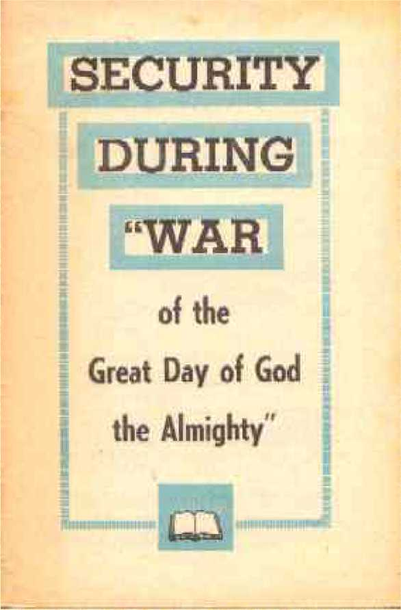

Due to various electronic necessities, insignificant formatting, punctuation, -,. capitalization, etc. and other minor editing has taken place. Spelling has been addressed especially where scanning has caused errors.
IN THIS TIME when disarmament conferences and even summit meetings of the heads of political states are the order of the day for postponing or preventing war from which they fear no one may survive, this booklet is published, to point to
the heavenly counsel that world
world leaders are overlooking but that leads ;.
to true security. It will be wisdom on your part
for your part to read and study this message, which is being given to large
vast republic audiences in a series of '^assemblies in big cities all around the globe. May this timely message aid you
•••■;'X’-i-T^S'-'t-in finding the needed security, is the wish of
THE PUBLISHERS
\Bible references herein are taken from .. the New World Translation of the Holy Scrip ... Scriptures for the most part. Roth is the abbreviation for J. B.
Rotherham's The Emphasised Bible;
AV is for the Authorized Version Bible of A.D. 1611.
The questions at the bottom of the pages of this booklet are for use in individual or group study.
.PUBLISHERS
WATCHTOWER BIBLE AND TRACT SOCIETY OF NEW YORK, INC.
INTERNATIONAL BIBLE STUDENTS ASSOCIATION
Brooklyn, New York, U.S.A.
/::^>*-*Made in the United States of America
THAT will be a "great day" - the day of the war that will end all wars. Unselfish lovers of peace and brotherhood have looked forward to that day, which will lead to a world of enduring peace among men of good will. The war of that great day is an absolute necessity. Only by it will the war-minded and war-provoking disturbers of all human society be wiped out forever. Although even another world war would be terrible, men of good will do not need to shudder at the thought that there must yet be a war of universal proportions. They need not feel bad that it must be by such a war that wars large and small will be ended for all time. Security will be amply provided for men of good will, to survive that "war of the great day of God the Almighty." 2 Since security will be provided for some to survive, that must be a different kind of war. When men now speak about a third world war, they see no possibility of survival by anyone, for they know what such a conflict in this age of
1. Why is the "war of the great day" an absolute necessity, and why need men of good will not feel bad at the prospect of this war?
2. As respects survival, why will that be a war different from a third world war?
.. • ■ <3^^^ ’ ’.'.f J.4
nuclear power and space missiles would mean., During the ten years of the 1950's the scientists and the militarists developed so many new deathdealing instruments of war that mankind has perfected what newspaper columnist C. L.,■; Sulzberger calls "the knack of total demolition, previously attributed only to God."* Mankind, already has enough of destructive materials to kill,’ itself over and over again, if it had the power to resurrect itself and repeat the destructive action.
3 Today we are not just threatened with bombardment by missiles of the four nations that are already in the "nuclear club." We also stand in danger of horrible destruction by gas warfare. Today such things as poison gases, diseasespreading gases and nerve gases have been invented -yes, what they call psychochemical gases, gases that affect one's psy’che, soul, or^/ mental and nervous control. Some of these gases can kill tens of thousands of people in not many minutes' time. Some gases can turn an entire city population crazy; others can paralyze but not kill populations, in order to pave the way to liberate cities from occupation by enemy armies.
4 Communist Russia has had a six-year start on the United States of America in developing a whole arsenal of various gases; it should have all the gases that the United States today has, and maybe more. So says Dr. Cecil M. Coggins, who used to be in the United States Army Chemical Warfare service. Some of the poison gases, he told
* The New York Times, as of December 26, 1959, on the editorial page, under "Foreign Affairs."
3,4. (a) Besides being threatened by space missiles, warfare by what other means endangers our lives? (b) To what extent has there been a production of gases for war uses, and what fear is increasing?
5 :5..L " .'?>: ?
the California Medical Association on February 23, 1960, "were more terrible than nuclear bombs." Some days earlier, or on February 5, it had been reported that the United States had ceased producing nerve gas, because the nation now had "enough." In the words of a certain Democratic congressman from the State of Colorado, "enough" means a big enough quantity "to kill every man, woman and child in the world." Of course, any man who would want to do such a thing would be considered mad. Yet great fear exists today, yes, the fear is increasing, that a third world war in which such devilish things of mass destruction would be let loose may be triggered by some madman or by mere accident or miscalculation.;;?: : 5 Seemingly, within the critical next ten years, all mankind stands in danger of madly destroying itself by its own means. The proposals for "fallout shelters" and for nuclear-age cities with subsurface shelters will provide no real security for living on earth after nuclear and poison-gas warfare on a world scale. Man's only means of survival could come only from a source higher than man, from someone mightier than man. That one would properly be the Creator both of man and of the earth that man occupies.
6 With the possible exception of ungodly Communists, all the nations pray to their gods in time of war to help them win the war. In the case of Christendom, her nations pray to one and the same god, as if he were partial and nationalistic, and would favor one so-called Christian nation 5. From what source only can the means for man's survival come, and why?
6. To whom do nations pray in time of war, and yet to whom may their victory not be ascribed?
6
against another "Christian" nation. But no nation of Christendom that has gained a military victory can ascribe its victory to the God of heaven and explain the victory by the words found in God's Holy Bible, in Zechariah 4:6: " 'Not by a military force, nor by power, but by my spirit,' Jehovah of armies has said." Yet by their appeals for divine help for winning the war, they confess that God is mightier than all the nations. Moreover, war prayers have gone unanswered, and praying nations have;.^; suffered defeat at the hands of the enemy. So God must have been against such losing nations,^ Jy; according to their way of thinking.
7 What, then, will be the standing of the nations of Christendom and of all the rest of the world before the God of heaven in the "war of the great day of God the Almighty"? Whose war will that be? Will "God the Almighty" actually fight in that war? If so, then against whom, and why against them? These are practical questions of great seriousness for all the nations to ponder. Yes, they are questions that all of us should ponder, for we are all approaching that war of wars! We are in sore need of information.
8 The "war of the great day of God the Almighty" will not be a third world war with all the modern hideous means of warfare. We may not be sure of the coming of a third world war, but the "war of the great day" is authoritatively predicted to come. It will come without fail. We have
7. What practical questions are there for us to ponder regarding the "war of the great day of God the Almighty"? 8, 9. (a) As contrasted with a third world war, why is the "war of the great day" certain to come? (b) Where is that war specifically mentioned, and what is it commonly called?
7
the warning words of God the Almighty himself to assure us of that. In God's own written Word, in its last book known as The Revelation or Apocalypse, the inspired Christian apostle John tells of his prophetic vision in these words:
9 "The sixth [angel] poured out his bowl [of the anger of God] upon the great river Euphrates, and its water was dried up, that the way might be; prepared for the kings from the rising of the sun.
And I saw three unclean inspired expressions, that looked like frogs come out of the mouth of the dragon [Satan the Devil] and out of the mouth of the wild beast and out of the mouth of the false.;7; prophet. They are, in fact, expressions inspired by demons and perform signs, and they go forth to the kings of the entire inhabited earth, to gather them together to the war of the great day of God the Almighty. . . . And they gathered them together to the place that is called in Hebrew Har-Magedon; [Armageddon]." (Revelation 16:12-16, marginal reading) The mention of the place of battle here is why the war is commonly called the battle of • Armageddon, even by political, military and religious figures of our times.
10 Never before our own day have the armaments of the nations been so great, so terrible, so holocaustic. Despite the large national armaments, never have we felt more insecure. The prophetic vision of the apostle John shows that the nations thus armed are being gathered to the "war of the great day," not by the holy spirit of God the • Almighty, but by certain propaganda, doctrine or teaching, "unclean inspired expressions," "expressions inspired by demons," demons who are the enemies of God the Almighty. This fact can mean nothing good for the nations. Only war with God!
10. (a) Despite what, do men feel more insecure? (b) To what are the nations being gathered, and by what means?
8
THE "CASUS BELLI" OR ISSUE
11 Every war has some issue over which it is fought. What is the issue of this "war of the great day"? Since it takes place on the "day of God the Almighty," is the issue one of Christendom against heathendom, or of western democracy against godless communism? And why can the issue be settled only by war? Will the war result really in victory for neither side? Could the war mean disaster for all, and security for nobody? The answers to these vital questions come to the light when we consider the One during whose day the war is fought. Who is this "God the Almighty"? What is his concern or interest in the day? And must he resort to war? If we learn the answers, we can decide where to take our stand.
12 The phrase, "the war of the great day of God the Almighty," is taken from the last book of the Holy Bible. In the very first book of that sacred Volume, God the Almighty announces himself. The announcement is made to a man in whom He was keenly interested, and in whom we also should be interested, namely, Abram, a great-grandson of Shem the son of Noah. Abram was born 352 years after the great flood of Noah's day. For displaying unwavering faith in the unseen God of heaven, Abram came to be called "the Friend of God." ? (James 2: 23, AV) More than three thousand nine hundred years ago God called Abram out of the city of Ur near the lower end of the valley of Mesopotamia, to go to an unknown land that God promised to give to Abram's descendants in due time. Abram accepted the call; and after the death of his father he crossed the Euphrates River into the Promised Land, where the city ofSalem
11. What questions regarding the war arise, and how can we be enabled to decide where to take our stand? - :
12. To whom did God first announce himself as the Almighty, and in what land?
9
Salem was located that was later to become Jerusalem. (Genesis, chapters 12-14) For twenty-four years Abram wandered around in this Promised Land. Then God made an appearance to him and announced himself.
13 In the first book of the Holy Bible, chapter seventeen, verses one to five, we read: "Then. Jehovah appeared to Abram and said to him: 'I am God Almighty. Walk before me and prove yourself faultless. ... As for me, look! my covenant is with you, and you will certainly become a father of a crowd of nations. And your name will not be called Abram any more, and your name must become Abraham, because a father of a crowd of nations I will grant you to be.' " This new name Abraham
means "Father of a Multitude."
14 Did Jehovah prove himself to be God Almighty to his friend Abraham? Yes! How? In the year after this appearance and announcement Jehovah gave to Abraham a son by his wife Sarah. But why was.: this a proof of His almightiness? Because Jehovah proved he was able to fulfill his marvelous promise to Abraham in spite of the age of Abraham and his wife Sarah. At that time Abraham was ninety-nine years old, and his wife Sarah eighty-nine years old. They were both as good as dead as far as producing children was concerned. Yet even before the conception of their son Isaac occurred, Jehovah changed Abram's name and called him something that Abram was not, namely, "Father of a Multitude"; and Jehovah also changed his wife's name to Sarah, meaning Princess. The conceiving of their only son Isaac was as if God had raised Abraham and Sarah out ■ <
13. After announcing himself as almighty, what change of name did God give to his earthly friend?
14. How did Jehovah prove himself to be God Almighty to Abraham at that time?
10
of death and had restored them to their years of fertility.
15 Isaac's birth, therefore, was a miracle by Jehovah, who is God Almighty. It occurred because Abraham had faith in God as being Almighty, One for whom nothing is impossible. Commenting on this, the apostle Paul writes to Christians who have faith like that of Abraham: "(He is the father of us all, just as it is written: 'I [Jehovah] have ■■;? :
appointed you a father of many nations.') This was in the sight of the One in whom he had faith, even God, who makes the dead alive and calls the things that are not as though they were. Although beyond hope, yet based on hope [Abraham] had faith, that he might become the father of many nations in accord with what had been said [by God], 'So your seed will be.' And, although he did not grow weak in faith, he considered his own body, now already deadened, as he was about one hundred years old, also the dead-ness of the womb of Sarah. But
because of the promise of God he did not waver in a lack of faith, but became powerful by his faith, giving God glory and being fully convinced that what [God] had promised he was also able to do." -Romans 4:16-21.
16 This same Jehovah God is just as almighty today as he was a mere four thousand years ago, in Abraham's day. Just because God's Holy Bible as a whole is now nineteen hundred years old, he has not died off. He is immortal, fully alive today. ' < Addressing him, the inspired prophet Habakkuk, said these remarkable words: "Are you not from long ago, O Jehovah? O my God, my Holy One, ? 15. As shown in Paul's comment on this in Romans 4:16-21, because of Abraham's exercising what quality did this miracle occur?
16. Why is Jehovah God just as almighty today, and what Biblical testimony to this do we have?
11
you do not die." (Habakkuk 1:12; Roth) Seven hundred years after Habakkuk, the apostle John quotes God as saying: " 'I am the Alpha and the Omega,' says Jehovah* God, 'the One who is and who was and who is coming, the Almighty.' " John also quotes certain faithful living creatures as saying: "Holy, holy, holy is Jehovah* God, the Almighty, who was and who is and who is coming." (Revelation 1:8; 4:8) It is therefore a right conclusion, that the immortal "Jehovah God the Almighty," who was to come, is alive today in his all-powerfulness, and that he is alive to the international events on earth today, and that he/v will shortly come and have his "great day." 17 However, what has Abraham to do with determining what the issue is in the "war of the great day"? He has to do with it because a government in control of all the earth is involved with Almighty God. When he appeared to Abram^.' and changed his name because God was to make him the forefather of a "crowd of nations," God said:
18 "I will multiply you very, very much and will grant you to become nations, and kings will come out of you. And I will bless [Sarah] and also give you a son from her, and I will bless her and she
shall become nations; kings of peoples will come from her." (Genesis 17:6, 16) That line of kings that was to come from God's friend Abraham was to have special value and importance to all the families and nations of the earth. How so? Because God made another promise to Abraham concerning all other families and nations, and it will not fail. It is nothing impossible for Jehovah God. Abraham obeyed God's call to go to the Promised
* In agreement with the New World Translation, there are seven different published translations of The Revelation into Hebrew that read "Jehovah" here.
17,18. (a) What has Abraham to do with determining the war issue? (b) How did Jehovah indicate this in his_ promises to Abraham?
12
Land, and this obedience bound Almighty God to keep this other promise to Abraham: "I will bless those who bless you, and him that calls down evil upon you I shall curse, and all the families of the ground will certainly bless themselves by means of you." Furthermore, when Abraham later showed willingness to sacrifice his miraculously given son Isaac, Jehovah's angel said: "By means of your seed all nations of the earth will certainly bless themselves due to the fact that you have listened to my voice." -Genesis 12:1-3; 22:15-18. 19 In fulfillment of this unbreakable promise r Almighty God must produce a king descended from Abraham, and by means of this king all families and nations of the earth may yet bless themselves. There is therefore a kingdom at issue, for the good of all the people of good will toward God. This Kingdom issue must be settled.
THE KINGDOM ISSUE
20 None of the kingdoms of Christendom has proved to be the promised kingdom of blessing.|:^< None of Christendom's kings has been of|T^< Abraham's seed, not even in a spiritual sense; for not one of them has really had the faith ofl: Abraham. Christendom, armed with nuclear weapons and poison gases, is no blessing to << mankind today. As for the Jews both in Israel and all around the globe, they have no king. Jews only look back to when they had a line of kings ruling in Jerusalem, a line running from King David and sitting upon the throne till Jerusalem was destroyed for the first time in the year 607 before our Common Era. Jews support the United Nations organization of this world. In spite of this, the divine promise to
19. In view of this, what is the issue that must be settled? 20. (a) Why have Christendom and the Jews of today failed to provide the kingdom of blessing? (b) Yet why is God's promise to Abraham no failure?
13
Abraham of thirty-nine centuries ago is no failure. Today Jehovah God the Almighty does have his King and his kingdom. This government by his King he makes the issue in the war of his great day.
21 In working out his mighty purpose Jehovah God put David of the tribe of Judah upon the throne of Jerusalem, for David was a descendant of God's friend Abraham. To David Jehovah God promised to set up an everlasting kingdom, inasmuch as from King David there was to be a royal line that would not be broken until the Son worthy to be the everlasting king should come. Said the Lord Jehovah to King David: "Your house and your , kingdom will certainly be steadfast forever before you; your very throne will become one firmly established forever." (2 Samuel 7:16) True, Jerusalem was destroyed in 607 B.C.E.; but that did not wipe out the royal line of King David which was to provide the King for blessing all the nations of the earth.
22 The line of descent to that all-important King of blessing is traced for us by two inspired historians, Matthew and Luke. In order to name the royal Heir and the correctness of his line of descent, the historian Matthew opens up his account with the words: "The book of the history of Jesus Christ, son of David, son of Abraham." (Matthew 1:1) Jesus could thus be the promised Seed of Abraham for blessing people of all the nations. His descent from Abraham was by means of a virgin who had been born in King David's birthplace, the town of
Bethlehem in the tribal territory of Judah. Her - ■ name was Miriam or Mary. Matthew
21. In working out his Kingdom purpose, what promise did God make to King David, and why did Jerusalem's -destruction not defeat it?
22. Why is the line of descent of the King of blessing traced, and so who was his earthly mother, and who his father?
•.< 14"
(1:16) calls her "Mary, who was the mother of Jesus, who is called 'Christ'." However, Almighty God was the Father of Jesus Christ.
23 An angel named Gabriel was sent from heaven to announce to Mary the divine choice of her to be the mother of the Son of God. Gabriel said: "Have no fear, Mary, for you have found favor with God; and, look! you will conceive in your womb and give birth to a son, and you are to call his name Jesus. This one will be great and will be called Son of the Most High, and Jehovah* God will give him the throne of David his father, and he will be king over the house of Jacob forever, and there will be no end of his kingdom. . . . Holy spirit will come upon you, and power of the Most High will overshadow you. For that reason also what is born will be called holy, God's Son. . . . with God no declaration will be an impossibility." (Luke 1:26-37) This declaration of God's angel Gabriel proves that Jesus Christ was to be and is today the everlasting Heir to the royal throne of David, his earthly forefather. He is the grand climax in the line of kings that were to come from Abraham through Sarah; and by his royal rule all the families of the earth will procure everlasting blessing on a paradise earth.
24 That is why the Catholic and Protestant kings and other kinds of political rulers of Christendom have proved disappointments and failures as regards bringing lasting good and blessing to their own peoples and to the rest of mankind. They are not the one Ruler chosen by Almighty God; and * In agreement with the New World Translation, twelve different published translations of the Gospel of Luke into Hebrew read/ —’J-"Jehovah" here.
23. What did Gabriel's declaration to Mary prove, and so who will benefit from the royal rule?
24. Why, then, have the kings and other political rulers of Christendom proved to be disappointments and failures,
and why do they force the issue?
15
neither have they reigned as vicars or earthly representatives of Christ the King. They have really misrepresented him to the world; and they are in fact opposed to the everlasting kingdom that God has given to Jesus Christ. This fact is what furnishes the issue for the "war of the great day of God."
OPPOSITION TO THE KINGDOM OF BLESSING
25 Opposition to God's kingdom with his anointed king in the throne is nothing new. From the start His kingdom has met opposition. This opposition has always stemmed from the same source and has followed the same pattern. The source of the opposition is higher than man. The source is the chief opposer or adversary of Jehovah God. It is Satan the Devil, the ruler of the demons; for the title Satan means Opposer, Adversary, whereas the title Devil shows that Satan is also a slanderer, a malicious liar, hence a deceiver. Jesus Christ informed us that Satan the Devil is the unseen "ruler of this world," who has been a curse to men and nations. (John 12:31; 14:30; 16:11) Woe, ,/-.^---therefore, to the nations who are being gathered by the propagandistic "expressions inspired by demons" to the battlefield of Armageddon for the "war of the great day of God the Almighty"! They are doomed to share the same destruction that previous opposers of the kingdom of Jehovah God suffered in past ages, and they will find no security. -Revelation 12:12.
26 Three thousand years ago in King David a typical or miniature kingdom of God was set up 25. From whom has stemmed the opposition to God's \r-kingdom with his anointed king, and why does it mean woe to those nations being gathered to Armageddon?
26. What did the ancient Philistines and the Assyrian world power try to do as respects the kingdom, and with what result to themselves?
16 on earth in the Middle East. King David and his son King Solomon and his other family successors sat upon what the Holy Bible called "Jehovah's throne." (1 Chronicles 29:23) The Philistines of Gaza and other seacoast cities of Philistia tried to overthrow the kingdom of David but were destroyed. The highly militarized world power of Assyria defied Jehovah God and tried to overturn the kingdom of God in David's family line. It failed to destroy Jerusalem, or even capture it, but was, itself destroyed by the Babylonian conqueror Nebuchadnezzar.
27 At length, however, Jehovah God became righteously indignant that so many kings of David's line misrepresented Him in "Jehovah's throne" at Jerusalem. So he decreed that the throne in that city should be overturned, ruined. (Ezekiel 21:2527) In fulfillment of this divine decree Nebuchadnezzar, king of the Babylonian world power, destroyed Jerusalem in 607 B.C.E, and took her king captive to Babylon to die in exile. Sixtyeight years later, or in 539 B.C.E., Babylon itself was punished for this unholy action toward Jehovah's typical kingdom at Jerusalem, and" Babylon herself was overthrown and finally ceased to exist. On the other hand, Jerusalem was rebuilt by worshipers of Jehovah God who returned from Babylon. Yet the throne was not restored to Jerusalem. Why not? Because God had in mind the everlasting kingdom of his Son, Jesus Christ, not on earth, but in heaven. Consequently, by the terrible destruction that came upon Babylon and those nations and world powers that opposed, attacked and attempted to destroy the kingdom of Jehovah God, let us be warned. Heeding the warning means security for us.
27. (a) What unholy action was Babylon permitted to take, and with what punishment to herself? (b) What warning should we take, and why?
17,-i.'177^"
28 When decreeing the ruin of Jerusalem by Babylon, Almighty God said by his prophet Ezekiel: "A ruin, a ruin, a ruin I shall make it. As for this also, it will certainly become no one's until, he comes who has the legal right, and I must give it to him." (Ezekiel 21:27) That one who was to come
with the legal right to the everlasting throne in a kingdom of God was Jesus Christ, according to the words of the angel Gabriel to Mary, the virgin in David's royal line. Jesus Christ, therefore, is the only one that has divine right, even though Christendom's kings religiously claim to rule "by divine right."
29 Jesus' title "Christ" means Anointed One. At the age of thirty years, Jesus the "Son of the Most High" was anointed, not with oil poured upon his head by a priest, but with holy spirit poured down from heaven by the Most High God. This occurred immediately after Jesus' baptism beneath the waters of the Jordan River. By this anointing with holy spirit Jesus became the promised Christ. (Matthew 3:16, 17; Luke 3:21-23) He was anointed to be the king of blessing in fulfillment of God's promise to Abraham. His anointing also included his being ordained to preach the good news of God's kingdom and to call out the day of vengeance on God's part. (Isaiah 61:1, 2; Luke 4:14-22) Up and down the land of Palestine he preached during the three and a half years that followed. But he also gathered disciples about himself and taught them and sent them out to preach the kingdom of God. (Luke 9:1-6;10:1-9) He did not grab at the throne of the Caesars of Rome; he left that to the Devil.
28. Who has the legal right to the kingdom, and despite what claim by Christendom's kings?
29. How did Jesus become "Christ," and why did he promote the preaching of God's kingdom?;.^.
18
30 The haters of God's kingdom opposed the preaching of God's kingdom and the chief preacher of it, Jesus Christ. They turned it into a political issue. They said he was making himself a king and was speaking against Caesar of Rome. In a friendly gesture to Caesar, they turned Jesus Christ over to the Roman authorities at Jerusalem, at the same time insisting that he be put to death on a torture stake. Rome, by its representatives, co-operated. So Jesus died on the stake with the title posted over his, head as composed by the Roman-governor, "Jesus the Nazarene the King of the Jews." (John 18:28 to 19:22) Thus Rome yielded to religious pressure and executed the Heir of God's everlasting kingdom. Later on, however, Rome voluntarily undertook to persecute, throughout her empire, the faithful Christians who were called to be joint heirs with Jesus Christ in the heavenly kingdom. Rome thus showed herself against God's kingdom by his Christ or anointed King. Rome must therefore render an account for this unchristian opposition to the Kingdom.
31 Already, in August of 410 (A.D.), Rome was captured and then sacked for six days by the forces of Alaric I, the king of the Visigoths. Later, in July of 455, Genseric, the king of the Vandals, stormed Rome and took her and gave her up to pillage for two weeks. But since then Rome, even though no longer a world power, has greatly added to her antichristian account. Deservedly she must suffer the fate of Babylon in a complete, everlasting;^^’ destruction in the judgment "war of the great day of God the Almighty."
30. How did Rome co-operate against God's kingdom, and what must she render for this?
31. Despite previous humblings, what judgment must Rome yet suffer, and why?
19
32 When Rome put Jesus Christ to a cruel, shameful death to please religious opposers of his promised kingdom, this did not defeat the purpose of his heavenly Father, Jehovah God. It merely fulfilled divine prophecy and proved that God's word is true and his prophecy is infallible. On the third day of Jesus' death Jehovah showed again to all the universe that He is God the Almighty by resurrecting Jesus Christ from the dead and clothing him with immortality, incorruptibility and heavenly glory. (1 Corinthians 15:3-8, 42-54) Forty days later Almighty God had the Lord Jesus ascend to His own throne in the heavens, to fulfill the’--.-; prophecy made by King David: "The utterance of Jehovah to my Lord is: 'Sit at my right hand until I place your enemies as a stool for your feet.' The rod of your strength Jehovah will send out of Zion:
'Go subduing in the midst of your enemies.' " (Psalm 110:1, 2; Acts 2:32-36; Hebrews 10:12, 13; 1:3, 4) The subduing of all the earthly enemies of the kingdom of God and of his Christ must now ;“^-.' follow as a certainty. Why? Because God Almighty himself has determined to make all of Christ's enemies his footstool, for his feet to tread down in destruction. Do we want security at that time? We should!
THE NEED FOR SECURITY
33 Today, not total international disarmament, butg the kingdom of Jehovah God by his Christ is the transcendent issue before all mankind. Now is the critical time when that burning issue must
32. (a) Why was God's purpose not defeated by Rome's putting Jesus Christ to death? (b) What must now follow as a certainty?
33, 34. (a) What is the transcendent issue before all mankind today, and why is the war getting closer? (b) When was God's kingdom in David's line overturned, and was God's kingdom to go out of existence forever?
20
be settled in vindication of the Supreme Author of the Kingdom, Jehovah God. The "great day of God the Almighty" for the war over the Kingdom issue is getting closer, because now there has been a reestablishment of God's kingdom with respect to the earth.
34 We do not need to be in any doubt about this, for Jehovah God long ago marked the time for this epoch-making event. The time calendar of secular history, compared with the time schedule of the Holy Bible, furnishes us the calculation that God's kingdom in the family line of King David was;?<;-? overturned in the year 607 B.C.E, according to God's own decree. That was when the royal city of Jerusalem was razed to the ground by the world power Babylon. However, God's kingdom in relation to our earth was not to go out of existence forever. It was to be interrupted only until the one should come who had the legal right to it; then God would give it to him.
35 During the exile of the royal family of the house of David in Babylon, God revealed to his prophet Daniel there in Babylon that the time of interruption till the re-establishment of God's kingdom would be seven prophetic times, seven symbolic times of 360 years each; which would amount to 2,520 years. The destruction of the throne city of Jerusalem and the desolating of its territory of Judah were completed by the month of October of 607 B.C. Hence those seven times of complete heathenish, Gentile domination of the earth would end 2,520 years from that time, or by October of 1914, in our own twentieth century. (Daniel 4:16, 23, 25, 32) In bringing this interruption of his kingdom to an end in 1914, God 35. (a) How is the end of the time of interruption to the kingdom calculated? (b) What was God's stated purpose in bringing the time of interruption to an end, and why must war now decide matters?
21 had a purpose. It was, as he stated to the king of||E Babylon, that world rulers might know "that the Most High is Ruler in the kingdom of mankind, and that to the one whom he wants to he gives it." (Daniel 4:25, 32) World rulers of today do not yet appreciate that fact, and refuse to acknowledge it. Hence the rulership of the Most High God in the kingdom of mankind has become an issue, and there must be a universal war to decide who rules all creation.
36 Men and women still live on earth who are; witnesses of the fact that God set up his kingdom in Christ's hands in 1914. God foretold that he would have his witnesses on the earth to give Kingdom testimony to all the nations. (Isaiah
43:10, 12, 21) Back in 1877 Jehovah's witnesses, both by word of mouth and by printed page, were already calling attention to the end of the seven times of the Gentiles in 1914, at which time there would be a full establishment of God's kingdom in Christ's hands in the heavens. In his own prophecy concerning the end of this world system Jesus Christ foretold that after the Kingdom's establishment Jehovah God would have his witnesses on earth who would bear testimony to all the nations concerning the established kingdom. The apostle Matthew quotes Jesus Christ as prophesying: "This good news of the kingdom will be preached in all the inhabited earth for the purpose of a witness to all the nations, and then the accomplished end will come." (Matthew 24:14) So this Kingdom witness has to take place and be finished before the "war of the great day of God the Almighty." By then many will have found the true place of security.
36. How is the setting up of the Kingdom being witnessed to, and before what must this Kingdom witness be finished? ' < „ ■ <*££'•;-22
37 At the good news of the establishment of God's kingdom by Christ in 1914 the nations of Christendom should have rejoiced. They had the Holy Bible by the hundreds of millions of copies. They had hundreds of thousands of priests and preachers who regularly led hundreds of millions of church members in praying the Lord's prayer, saying: "Our Father which art in heaven, Hallowed be thy name. Thy kingdom come." Did they truly mean that prayer? Did they really want God's kingdom, or men's kingdom? Were the kings of Christendom, who required their subjects to <■: recognize their claim to rule "by divine right," •• willing to recognize the only one who had the''<?“\. "legal right," the divine right to rule as king over all mankind, namely, the Christ or Anointed One of the Lord God? The events of 1914 and since then have shown the true, undeniable answer. The nations of Christendom have acted just as Bible prophecy foretold. Their actions have exposed their prayers as hypocritical.
38 Over their actions the prophetic psalm asks: "Why have the nations been in tumult and thel?“\ peoples themselves kept muttering an empty ' thing? The kings of earth take their stand and high officials themselves have massed together as one against Jehovah and against his anointed one [his Christ]." -Psalm 2:1, 2; margin.
39 As foretold here, all nations were to be in a tumultuous rage, massed together against the ; heavenly kingdom. With this agrees the vision that the apostle John had of what would take. .
37. (a) How should the nations of Christendom have acted at the good news of the Kingdom's establishment in 1914? (b) What gives the undeniable answer as to the sincerity of their prayers?
38, 39. (a) In 1914, in what condition were the nations to.y be according to Psalm 2:1, 2? (b) In fulfillment of Revelation 11:15-18, who were first to 'become wrathful' in 1914, and what shows that their attitude since has not changed?
23
place at the end of the seven times of the Gentiles in 1914. John says: "Loud voices occurred in heaven saying: 'The kingdom of the world has1 : become the kingdom of our Lord and of his Christ, and he will rule as king for ever and ever.' And the twenty-four persons of advanced age who were;7; seated before God upon their thrones fell upon their faces and worshiped God, saying: 'We thank you, Jehovah God, the Almighty, the one who is and who was, because you have taken your great power and begun ruling as king. But the nations became wrathful."' (Revelation 11:15-18) Not nations called "heathen," but nations making up Christendom, together with their priests and preachers, were first to 'become wrathful' in 1914, so as to break out in a world war for their own world domination. Their hostile attitude to the kingdom of the Lord God and of his Christ has not changed since. A second world war, beginning with the nations of religious Christendom, erupted in 1939. Since its close in 1945 more than eighty ; nations, under leadership of the nations of. Christendom, have massed together in the United Nations organization, not to support the heavenly kingdom in the hands of Christ, who has the legal right to it, but to maintain world domination by earthly men.
40 Satan the Devil and his demons are also against the Kingdom. The Revelation, written down by the apostle John, shows that. The nations inside and outside of Christendom have all refused to be led by the good news of God's established kingdom as preached by Jehovah's witnesses since World War I. Hence they have not been led into peaceful
submission to the divine Kingdom; but, as John's vision foresaw, they are being gathered by 5 "expressions inspired by demons" under Satan 40. By what have the nations refused to be led, and hence to what are they being gathered and by what?.-.^
24
the ruler of the demons to the "war of the great day of God the Almighty," at Armageddon. (Revelation 12:1-12; 16:14-16) What will that mean for the nations? God tells us.
41 There will be a destruction like that upon Babylon of old, at the hands of God's forces. Says his prophet Isaiah: "They are coming from the land far away, from the extremity of the heavens,; 7^->’ Jehovah and the weapons of his denunciation, to wreck all the earth. Howl, you people, for the day of Jehovah is near! As violence from the Almighty it will come. . . . Look! The day of Jehovah itself is coming, cruel both with fury and with burning; anger, in order to make the land an object of astonishment, and that it may annihilate the land's sinners out of it." -Isaiah 13:1, 5-9.
42 There will be a destruction like that which came upon unfaithful Jerusalem by the king of Babylon. In the prophecy by Zephaniah we read: " 'I shall without fail finish everything off the surface of the ground,' is the utterance of Jehovah." " 'I shall finish off earthling man and beast. I shall finish off the flying creature of the heavens and the fishes of the sea, and the stumbling blocks with the wicked ones; and I will cut off mankind from the surface of the ground,' is the utterance of Jehovah. 'The great day of Jehovah is near. It is near, and there is a hurrying of it very much. The sound of the day of Jehovah is bitter. There a mighty man is letting out a cry. That day is a day of fury, a day of distress and of anguish, a day of storm and of desolation, a day of darkness and of gloominess, a day of clouds and of thick gloom, . . . And I will cause distress to mankind, . . . Neither their silver nor their gold will be able
41. According to Isaiah 13:1, 5-9, what will come upon the nations?
42. According to Zephaniah 1:2, 3,14-18, what will come upon the nations?
25
to deliver them in the day of Jehovah's fury; but by the fire of his zeal the whole earth will be devoured, because he will make an extermination, indeed a terrible one, of all the inhabitants of the earth.' " -Zephaniah 1:2, 3, 14-18.
'•’1V^\5?^M^THE PLACE OF SECURITY
43 In the face of the threatening "war of the great day of God the Almighty" there is urgent need for a shelter, a refuge, a place of security different from that which worldly-wise men are proposing for surviving a possible nuclear third world war. What men are proposing for human security during future world war by men will not be equal to the? security needs during the coming war by God with men and Satan and his demons. Only God himself can tell us what security measures will be adequate, even as he told the godly Noah what security measures to take to survive the Flood that destroyed the wicked world system of 4,300 years ago. Almighty God alone is powerful enough to provide the place of safety and survival during his war for wiping out all enemies of his kingdom by Christ. He has provided the safe place, and he tells us how to get into it.
44 To men, women and children who are living among nations and people that do not pale in shame because of their sins and opposition toward Almighty God, he says by the afore-quoted prophet Zephaniah (2:2, 3): "Before the statute gives birth to anything, before the day has passed by just like chaff, before there comes upon you people the •? burning anger of Jehovah, before there comes upon you the day of Jehovah's anger, seek Jehovah, all you meek ones of the earth, who have practiced His own judicial decision. Seek right-
43. In the face of the threatening war, what do we urgently need, and who can and does provide it?
44. What right course to take does Almighty God advise through Zephaniah, and with what probability?
■■ ■ ' ? J 26
eousness, seek meekness. Probably you may be concealed in the day of Jehovah's anger." It was
very fitting that this probability of being hidden for taking the right course was held out by Zephaniah, because his name means "Jehovah Has Concealed." 45 Immediately after telling of the urgent need togs seek the only possible place of being concealed against extermination, Zephaniah tells of the destruction to come upon the modern-day counterparts of the Philistines, the Moabites, the Ammonites, the Ethiopians and the Assyrians, all of whom, in their day, showed hatred of Jehovah's kingdom at Jerusalem or Zion. -Zephaniah 2:4-15. 46 This is reliable advice that leads to security, for it is God-given advice. Why, then, should we continue to be terrified at the shape of things to come and to suffer what Jesus Christ foretold, namely, "anguish of nations, not knowing the way out because of the roaring of the sea and its agitation, while men become faint out of fear and expectation of the things coming upon the inhabited earth"? (Luke 21:25, 26) Do not yield any more to the "expressions inspired by demons" and be led into a fight with the nations against God the Almighty and his kingdom by Christ. Listen to the good news of his kingdom now being preached everywhere by his witnesses before the end comes upon the Kingdom's enemies. (Matthew 24:14) Seek peaceable relations with Jehovah God the Almighty, for upon his mercy depends all our security amid the war of his great day.
47 Jehovah's safety instructions are addressed
45. Immediately alter such advice, what does Zephaniah tell about?
46. In view of such advice, what should we cease to do and what should we seek with Almighty God?
47. Who are the ones addressed in the advice given through Zephaniah, and how should we prove ourselves to be such kind of persons?
27 to the "meek ones of the earth, who have practiced His own judicial decision." Show yourself meek or humble before him, and do so by undertaking to practice his judicial decision. It is handed down in his holy Written Word. Jehovah's witnesses today practice his judicial decision. They know what he has decided is his will for us to do in this most
critical time. If, in the Lord's Prayer, we pray to the heavenly Father, 'Your will be done on earth as it is in heaven,' then let us make an honest effort to find out what his will is now and then do it lovingly, in faith and obedience.
48 Seeking Jehovah today does not mean becoming a proselyte to political Zionism and to Judaism with its traditions of men. In Zephaniah's day Judaism had not even been introduced. Seeking Jehovah now means more than it did in Zephaniah's day; for in the prophet's day the typical kingdom was still functioning with kings of David's line on "Jehovah's throne" at earthly Jerusalem or Zion. (Zephaniah 1:1) Seeking Jehovah today means taking steps also to come into harmony with God's Son who sits as King on Jehovah's throne, at Jehovah's right -<\. \ hand in the heavens far above our earth. After Jesus gave his footstep followers the Lord's Prayer in which we pray, "Your kingdom come," Jesus said to them: "Keep on, then, seeking first the kingdom [of God] and his righteousness, and all these other things will be added to you." (Matthew 6:9-13, 33) All his Jewish followers left Judaism and took up seeking the kingdom of Jehovah's Christ.
(Galatians 1:13-17) They sought the righteousness that comes from Jehovah God through his Son Jesus Christ, who died as a perfect human sacrifice to relieve believing men and women of their sin and its penalty death.
48. (a) Why does seeking Jehovah today mean more than it did in Zephaniah's day? (b) What does seeking righteousness now mean?
28
49 We today have all the more reason to do like them, for today the heavenly kingdom of the Christ is established. It has been in operation since the end of the seven times of the Gentiles in 1914. Now Jehovah is proceeding to put all of Christ's enemies under his feet as though they were a footstool. We do not wish to be put under his feet to be crushed to death as his enemies; for it is written with respect to Christ's battle action in the "war of the great day of God the Almighty" that "he treads, too, the press of the wine of the anger of the wrath of God the Almighty. And upon his outer garment, even upon his thigh, he has a name written, King of kings and Lord of lords." (Revelation 19:15, 16) His kingdom is the means for vindicating the sovereignty of Jehovah God as being universal, supreme. It is also the means for blessing all the families of the earth. It is the kingdom of Abraham's Seed of blessing. We want the blessing, for that means eternal life in the new order of things under the Kingdom. We cannot seek Jehovah today except through the kingdom of his Son, the Mediator between God and men.
50 Here, then, is the place of security, namely, on the side of God the Almighty and of his Christ, and under their protection. When God elevated Christ to his own right hand after resurrecting him from the dead, God gave Christ a quantity or measure of the holy spirit to pour out upon his disciples on the earth. This outpouring of spirit began on the day of Pentecost in May of A.D. 33. The apostle Peter, one who got the spirit that day, told the crowd of eyewitnesses that this was the
49. (a) Why do we have today all the more reason to do like Jesus' personal disciples? (b) Why can we seek Jehovah only through his kingdom?
50. Where, then, is the place of security, and what prophecy in agreement with that fact did the apostle Peter quote at Pentecost?
29 beginning of the fulfillment of Joel's prophecy for the last days. Then Peter quoted these further words of Joel's prophecy: "I will give portents in the heavens and on the earth, blood and fire and columns of smoke. The sun itself will be turned into darkness, and the moon into blood, before the coming of the great and fear-inspiring day of Jehovah. And it must occur that everyone who calls on the name of Jehovah will get away safe; for in Mount Zion and in Jerusalem there will prove to be the escaped ones, just as Jehovah has said, and among the survivors, whom Jehovah is calling." -Joel 2:28-32; Acts 2:1-36.
51 Of course, the apostle Peter did not mean literal Jerusalem or Zion upon the earth; for Jerusalem that had clamored for Jesus' death and that
afterward persecuted his faithful disciples was horribly destroyed by the Roman legions, just thirty-seven years after that Pentecostal.' outpouring of holy spirit upon Peter and his fellow's disciples. Peter, as well as Joel, whom Peter quoted, referred to the heavenly Jerusalem, the heavenly Zion, which is a symbol of God's kingdom by his Christ. We must therefore seek the now established kingdom of Almighty God and his Christ. Only on its side and under it can we be among the survivors.
52 The prophet Joel, whom Peter quoted, said concerning these days before the "coming of the great and fear-inspiring day of Jehovah," that "everyone who calls on the name of Jehovah will get away safe." As we obey the prophet Zephaniah's words to "seek Jehovah," we must also do as Joel said, 'call upon the name of' Jehovah.';'/
51. By the expressions Zion and Jerusalem, to what was Peter referring, and therefore on the side of what will the survivors be found?
52. According to Joel, those doing what will get away safe, and what does the doing of this today mean?
30
Then we shall get away safe during the universal war of the great day. This now requires us to call on Jehovah through his reigning King Jesus Christ. It also means calling out Jehovah's name publicly, just as his witnesses are doing in all nations, from city to city and from house to house, by word of mouth and by printed page. His name will be glorified by his kingdom, and his kingdom is the alltranscending issue today. So the good news of this kingdom is what seekers of Jehovah today must preach in all the earth for a final witness to all nations, before the end of these nations comes in the "war of the great day of God the Almighty."'?// Jehovah's King, Jesus Christ, has commanded this witness to be given now. 53 If, in this world's' 53"time of the end," we take this plainly stated course, then, says the inspired prophet Zephaniah, "probably you may be concealed in the day of -Jehovah's anger." (Zephaniah 2:2, 3) O what security there is to be enjoyed in Jehovah's place
of concealment for us! What rest, what peace, what freedom from fear, what bouyant expectation offe.-surviving through the day of his anger against the enemy nations of this world! The inspired psalmist beautifully describes the miraculous safety to be enjoyed there, saying: "Anyone dwelling in the hiding place of the Most High will procure himself lodging under the very shadow of the Almighty One. I will say to Jehovah: 'You are my refuge and my stronghold, my God, in whom I will trust.' " 54 Concealed under the shadow of his wings, just think of experiencing these words as the war of 53. By taking the right course, what does Zephaniah say may probably occur to you, and what does Psalm 91:1, 2 say is to be enjoyed?
54, 55. (a) Under concealment, what may one look on and see? (b) Why will the reward of "length of days" be satisfying, and why will the salvation by Jehovah be eternal?
31
God the Almighty exterminates his wicked- 54 enemies: "A thousand will fall at your very side and ten thousand at your right hand; to you it will not come near. Only with your eyes will you look on and see the retribution itself of the wicked ones."—54. O, then, may we be wise and take advantage of the remaining time and seek Jehovah and call upon his name! For, says the Almighty God, "he will call upon me and I shall answer him. I shall be with him in distress. I shall rescue him and glorify him. With length of days I shall satisfy him, and I shall cause him to see salvation by me." -Psalm 91:1, 2, 7, 8, 15, 16.
55 "Length of days" in the new order of things after the "war of the great day of God the Almighty" - what a reward! It will be something satisfying, for the Kingdom in charge of that new order will be a blessing to men of good will. The salvation that God will cause those who seek him to see will be eternal, because his kingdom that brings salvation will endure forever and ever. So our security through the immediate future and for all time to come lies with his Kingdom. Our course will be life-rewarding if we seek it now.
56 All hail, then, to the "great day of God the
Almighty"! Let it come speedily, for it means?■; glorious victory for the true God Jehovah and a righteous government by his Christ for the everlasting blessing of all men of good will, living and dead. Join now with the happy witnesses of Jehovah's kingdom in finding safe concealment for our "security during 'war of the great day of God the Almighty.'"
56. Why may we hail the "great day of God the Almighty," and what should we all join now in finding?